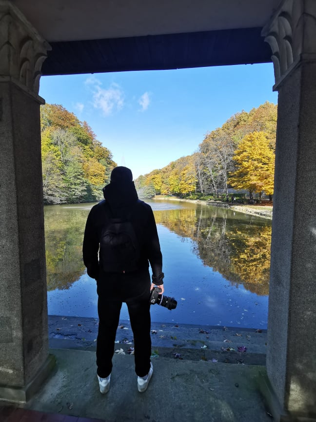

About me
I am a Bosnian living in Slovenia. I was born in a small village Rovaši in eastern Bosnia, near the bosnian-serbian border. Due to war in BiH my family was forced to move from our homeplace and to find new home in Kakanj, a town in central Bosnia. Due to peace in BiH I was forced to move to Slovenia. Now I am living in Maribor, statistical region of Podravska.
Photography
Photography is my favorite hobby. That is actually hobby by which I make some money ocasionally. On this web page you can see some of my pictures and also you can check what sort of photoshooting do I offer. Enjoy my photos and please feel free to contact me for a collaboration.
Equipment
Nikon...
Get in touch